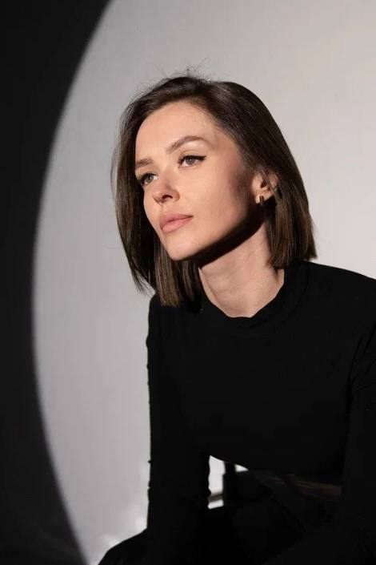
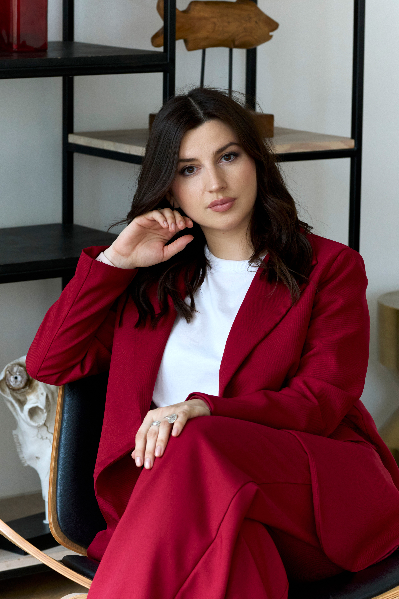
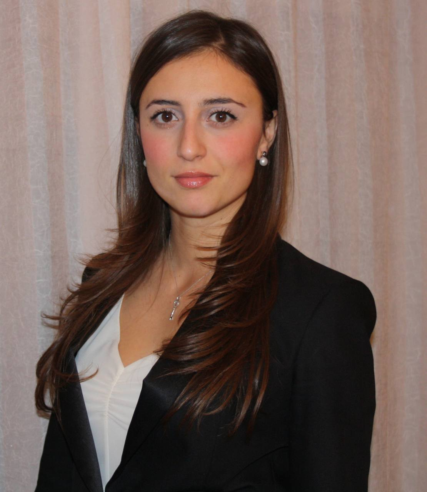
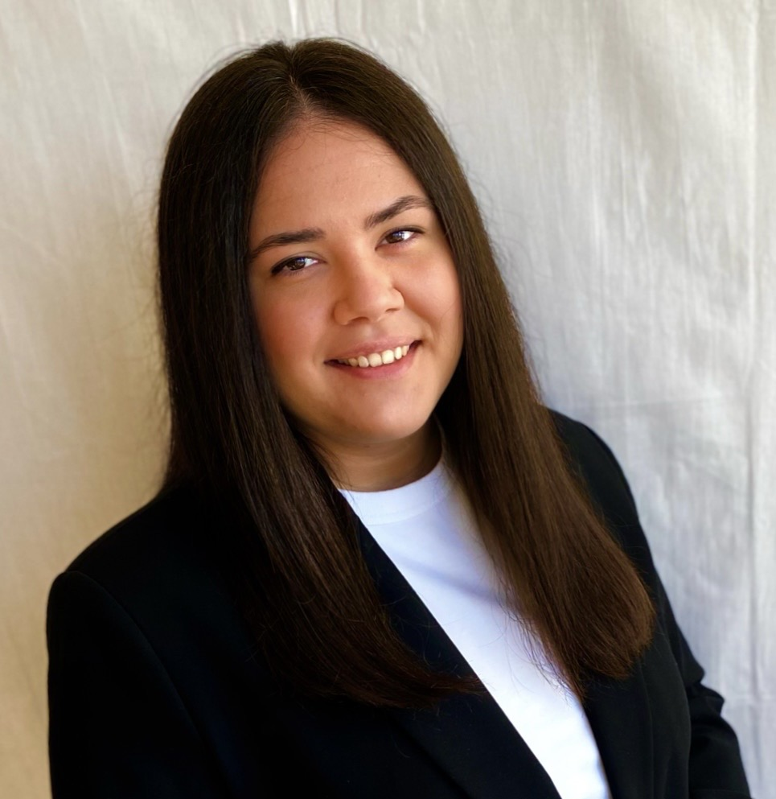
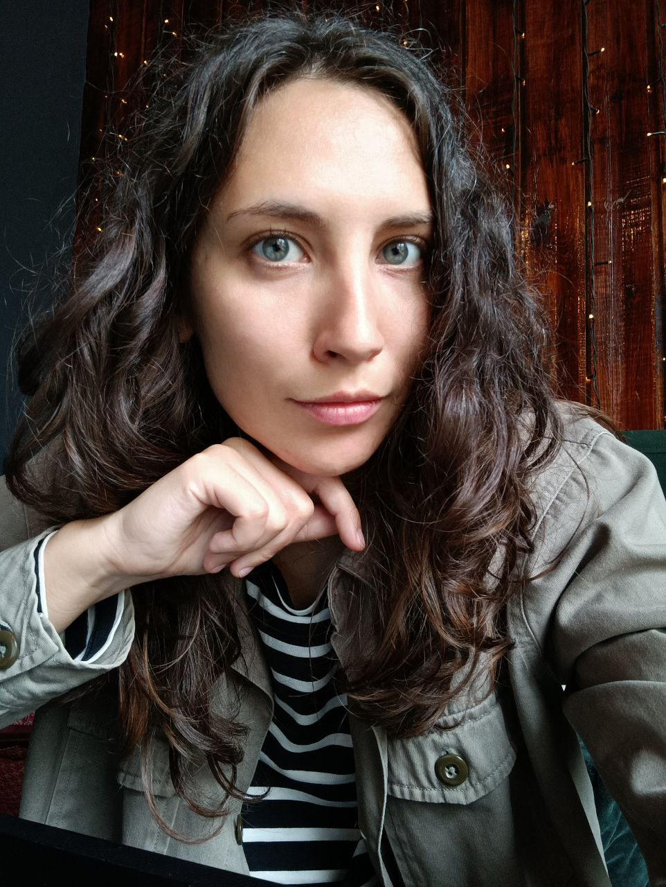
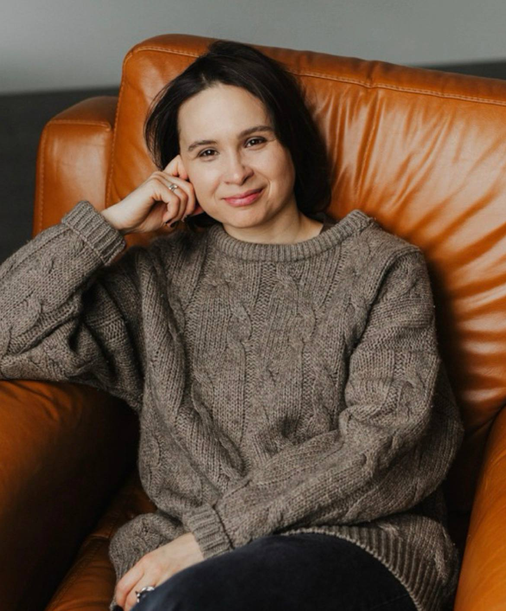

Отношения и близость
Зависимость, ревность, охлаждение чувств, измена, развод, расставания, отношения с недоступным партнёром, семейные конфликты, трудности близости и повторяющиеся сценарии.


П лесмысла
лесмысла
сообщество практикующих психоаналитических психотерапевтов
Не каждая трудность преодолевается усилием воли
Мы создали пространство, чтобы вы смогли быть услышанным, познакомиться с собой, обнаружить себя в отношениях с другими и с жизнью.
Психоаналитический метод позволяет глубоко исследовать свою жизнь, посмотреть на повторяющиеся паттерны и увидеть, как прошлое влияет на настоящее, разобраться с конфликтами внутри себя и во вне, честно взглянуть на то, что есть внутри нас, что не дает нам возможности справиться и продвинуться к нашим желаниям и целям. Психоанализ не подразумевает реактивных перемен, это бережный путь к постепенным изменениям. Какие-то симптомы могут проходить сами собой в процессе познания, с какими-то придется разгадывать причины их появления. А вокруг каких-то придется установить табличку "опасно" и не переступать эту границу, пока не придет время. Это разговорный метод, не подразумевающий действия, советов и упражнений. Глубинный путь туда, где боль перестает быть приговором, а страдание обретает голос, а история форму. И жизнь становится жизнью, а не отбиванием срока.
Запросы, с которыми можно обратиться
Зависимость, ревность, охлаждение чувств, измена, развод, расставания, отношения с недоступным партнёром, семейные конфликты, трудности близости и повторяющиеся сценарии.
Тревожность, страхи, панические атаки, перепады настроения, подавленность, апатия, раздражительность, вина, обиды, навязчивые мысли, утрата, внутреннее напряжение и чувство пустоты.
Неуверенность, низкая самооценка, одиночество, зависимость от чужого мнения, усталость соответствовать ожиданиям, перфекционизм, прокрастинация и ощущение «я не справляюсь».
Потеря себя и своих желаний, экзистенциальные кризисы, вопросы взросления, ощущение «живу не свою жизнь», внутренние противоречия и кризисы в личной или профессиональной сфере.
Эмоциональное выгорание, снижение работоспособности, потеря интереса к работе, трудности в профессиональной сфере, отсутствие направления и целей.
Эмоциональные травмы, детский опыт, пережитое насилие, а также телесные симптомы.
терапевты сообщества

психоаналитический психотерапевт
Формат: онлайн и очно в кабинете, Москва, м. Савеловская.
Telegram: @kseica.
Телефон: 89236338838.

психоаналитический психотерапевт
Формат: очно и онлайн.
Telegram: @SamarkinaPsyh.
Телефон: 89257026364.

психоаналитический психотерапевт
Формат: онлайн.
Telegram: @annaefimova1.
Телефон: 89161602297.

психоаналитический психотерапевт
Формат: онлайн и очно, Москва, м. Чистые пруды.
Telegram: @tnkubrina.
Телефон: 89272549848.
клинический психолог, психоаналитический психотерапевт
Формат: онлайн и очно, м. Белорусская.
Telegram: @KseniiaKseniia.
Телефон: 89024726710.

психоаналитический психотерапевт
Формат: онлайн.
Telegram: @ma_tyusha.
Телефон: 89995843118.

психоаналитический психотерапевт
Формат: онлайн и очно в кабинете, Москва.
Telegram: @AlsuBekish.
Телефон: +79168081599.